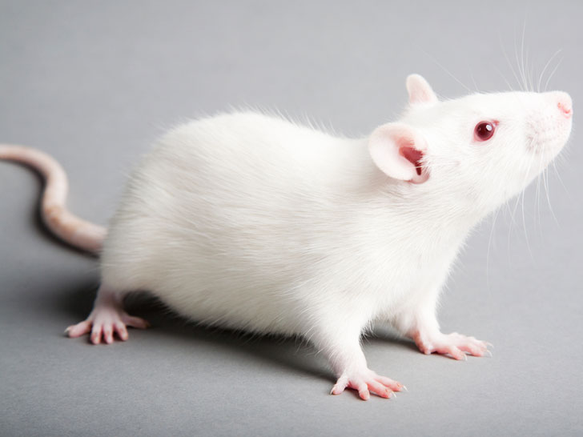
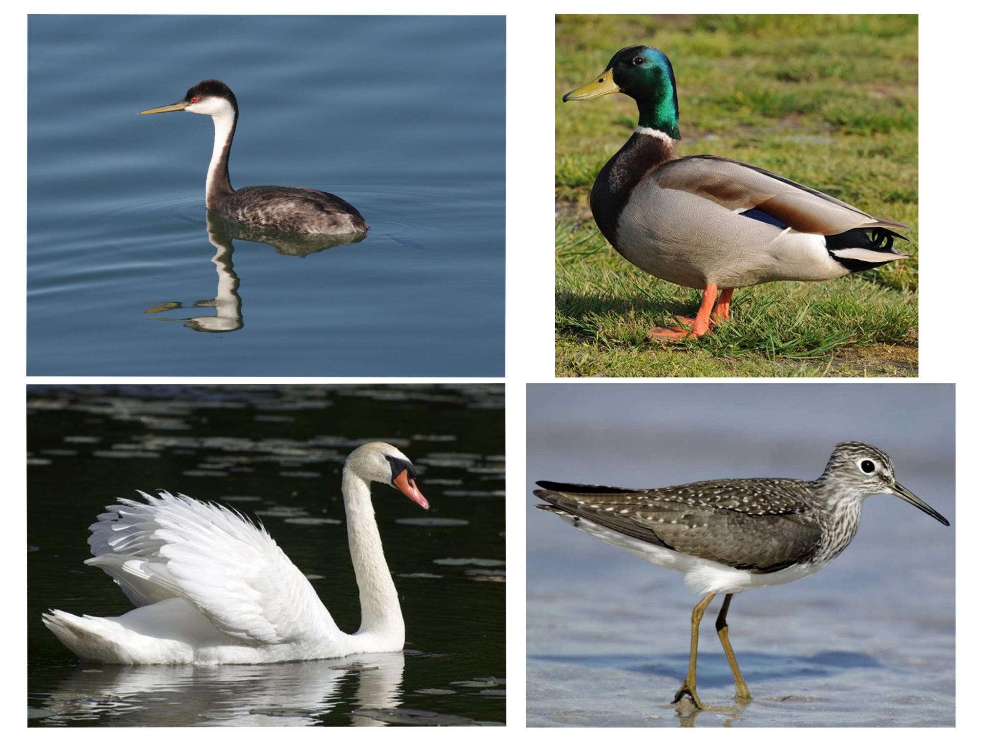
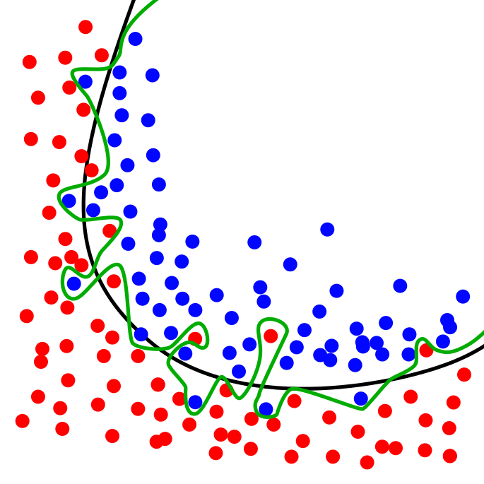

# Studying Human Language with Machine Learning ### Will Styler Michigan State University --- ### This workshop was... not straightforward to plan - Machine Learning is a huge field - Linguistics is a huge field - "Let's teach you to apply one huge field to another before 1pm!" --- ### Here's the plan - What is Machine Learning? - How do two common algorithms work? - What's the workflow for Machine Learning? - What can machine learning do in the World? - What can machine learning do in Linguistics? - How do you start applying it to your problems? --- # What is Machine Learning? --- ### Machine Learning Three stages: - 1) Using Computers to find patterns in some kind of data using a machine learning algorithm ('Training') - 2) The computer uses those patterns to make decisions and predictions ('Testing') - 3) You evaluate the results, make changes, and repeat! --- ### What *doesn't* machine learning do? - Machine learning doesn't deal with 'meaning' or 'understanding' - It's not about 'AI' - It's just fancy math done on data, to draw meaningful lines, which *seems* like learning --- ### "Wait, fancy math on data? You mean statistics?" - Well, kind of... --- ### Machine Learning is a branch of statistics - Statistics (as practiced in Linguistics) is focused on description - "What are the relationships between different factors in my data?" - Machine Learning is focused on prediction and decision - "What's the next data point likely to look like? - "We have groups here. What group does this new point belong to?" --- ### Two Possible Emphases - Research - Focus on transparency and learning as much as you can about the data and task - Engineering - Focus on raw predictive power and accuracy --- ### Two kinds of Machine Learning - *Supervised Machine Learning* - We give the machine sample data annotated with the patterns it needs to learn - *Unsupervised Machine Learning* - "Here's the data, have fun!" - Both have strengths and weaknesses - We're going to focus on *supervised* machine learning for the rest of today --- ### Many kinds of problems - Classification - Clustering - Dimensionality Reduction/Simplification - We're going to focus on classification today --- ## So, why would we want this for language? --- ### Because humans are awful. --- ### Humans are necessary for linguistic research - Any hypothesis about human language must be tested with human speakers - ... but testing with human subjects is a painful process - IRBs are required - It's time consuming - It's expensive - Studies can be difficult to design - Each participant has a different language background --- So, even though we need humans to test our hypotheses and theories... - **Any information we can get *without actually involving humans* is great** - Machine learning algorithms can be used to simulate decision making for these kinds of studies - ... and it can remove the need for humans for boring parts of research, too! --- ### Computers are not humans  <!-- .element: class="fragment" --> --- ### ML algorithms have some serious advantages for studying language! * Their decisions are easier to quantify than humans' * They'll (often) tell you *how* they made the decision they did * They have no knowledge that you don't give to them * They make all decisions independently * They don't require payment or scheduling * They're available 24/7 --- ### And it's broadly applicable to many subfields and questions --- ### So, Machine Learning wins us a great deal for Linguistics ... but how does it work? - **How is it actually learning?!** --- # Machine Learning Algorithms --- <img class="big" src="img/kayaking.jpg"> --- > "I'm looking at a bird. What kind of bird is it?" ---  --- ## The World's Dumbest Algorithm --- ### "It's a duck!" Algorithm - No matter the data, just says "Eh, it's a duck" - Surprisingly accurate - If 78% of waterfowl on the lake are ducks, it's accurate 78% of the time. - If 10% of the waterfowl are ducks, it's accurate 10% of the time. --- ### Class Imbalance When one of your classes is much more common than the other(s). - You'll have to work around this, by tuning your models and being clever. --- ## The World's Second Dumbest Algorithm --- ### "It's probably a duck!" Algorithm - Count the proportion of ducks in the training data, and then guess at random 'Duck' X percent of the time - Much more accurate when the classes are imbalanced - If only 10% are ducks, this will be *much* more accurate than "It's a duck!" - ... but you'll also start making mistakes on ducks, too! --- (You'll never use either of these approaches, but they make you think carefully about weight and class imbalance) --- ### My Algorithms of Choice * RandomForests * Because they're transparent * Support Vector Machines * Because they're the gold standard --- Before we discuss RandomForests, we need to talk about... --- ## Decision Trees --- Let's pretend to be classifiers! > "I'm looking at a bird. What kind of bird is it?" --- One Approach: * **Ask questions, then make decisions based on the answer!** --- --- By asking enough questions looking at a training set, you'd end up with a **Decision Tree**. * Classification is just "following the tree" * Ask a question, then ask a different question based on the first one, then ask another.... --- ## RandomForests --- ### To make a RandomForest: * 1) Make a decision tree using a subset of the features and data * 2) Make another decision tree using another random subset of features and data * 3-500) Do that 498 more times * 501) Synthesize these models into a single, best-performing model * 502) Classify using that mega-tree! --- Let's make a RandomForest! --- --- ### RandomForests are great! * They work well with small and large datasets * They're transparent! - They allow us to calculate feature importance directly * ... but they're not the most accurate algorithms out there --- ## Support Vector Machines! --- Back to the waterfowl! --- <center> <table> <tr> <th><img height="1000" src="img/bird_mallard.jpg"></th> <th><img height="1000" src="img/bird_swan.jpg"></th> </tr> </table> </center> --- ### Your Kayaking Relative has taken a hands-on approach to classification * You are now recieving texts with bill length and body length measurements for birds * The question is "Swan, or Duck?" --- <img class="big" src="img/birds_lengthsize.png"> --- ### Support Vector Machines * Look at all the data in an n dimensional space * n is the number of features * Try to find a hyperplane with the best separation * This hyperplane is delineated by the *support vectors* * Classification is just seeing where the new data is relative to that line --- <img class="big" src="img/birds_lengthsize_line.png"> --- ### What if the data isn't linearly separable, or is really complex? --- ### The "Kernel Trick" * The default SVM creates a feature x weight matrix * New items are evaluated by class similarity based on (feature*weight) * You can do a "kernel" trick, and specify another similarity function * There are *tons* of these out there. Radial (RBF) is very common. --- This has two consequences! * 1) **SVMs become memory-based** * 2) **They can handle non-linear data!** --- <img class="big" src="img/birds_lengthsize_line.png"> --- ### Memory-based classification * A Kernelized SVM compares each new item *to every item in the training set*, one-by-one. * A new item which is really similar to an old one (according to your kernel) will be classified similarly * **Kernelized SVMs are *very* exemplar-ish** * Awesome for speech perception! --- ### Non-linear? Non-issue! * Once the model has become kernelized, the classification space gets really weird * You're no longer looking at linear relationships * This means that a hyperplane can cut the data "non-linearly" --- <iframe data-autoplay width="840" height="500" src="http://www.youtube.com/embed/3liCbRZPrZA"></iframe> --- ### Support Vector Machines * SVMs are *really* accurate * ... and anything that beats them is usually really complex * They act exemplar-ish, when used as I used them. * They're a "gold standard" for machine learning --- ### So, we've discussed two algorithms * RandomForests for transparency * SVMs for accuracy --- ### There are many, many more out there - Naive Bayes - "What's the probability of each class, given these values?" - Clustering Algorithms - "Find groups in the data, assign them areas, and new data is grouped accordingly" - Neural Networks (and Deep Neural Networks) - "Build a deep network of nodes such that they accurately model the class distinctions" --- ## A note on "Deep Learning" --- ### So, that's how it works. - How do we make that process helpful for our work? --- # The Supervised Machine Learning Workflow --- ### Machine learning tends to work the same way each time - We're going to use a toy example here --- ### The Process - 1) Collect Data - 2) Label Data with the classes of interest - 3) Find Features in the data which might be useful - 4) Select an algorithm - 5) Train Algorithm on some of the data - 6) Test Algorithm on another chunk of the data - 7) Check the accuracy - 8) Repeat with modifications until you're either very happy, or very sad --- ### 1) Collect Data - More data is generally better - Representative data is good - Diverse data is ideal - Balance of classes is helpful --- ### 2) Label Data with the classes of interest - Finding the classes can be half the battle - Make boundaries between the classes clear - Make sure that the task is actually do-able - If humans can't do the labeling consistently... --- ### 3) Find Features which might be useful - Garbage in, garbage out - There are approaches that find their own features, but that's more specialized - Features will need to be normalized --- ### 4) Select an algorithm - Many, many, many options - Each has strengths, weaknesses - ... and some are better suited to certain uses - ... and each algorithm has options... --- ### 5-6) Train Algorithm on some of the data, test on another chunk - Generally, you'll split the data into three sets - Train - For training the algorithm - Dev - For testing the algorithm from iteration to iteration - Test - For testing the algorithm overall - Cross-validation helps --- ### Cross-Validation Iterating through the training data, training and testing on different chunks --- ### 5-Fold Cross Validation <center> <table> <tr> <th>Test<br>Train<br>Train<br>Train<br>Train</th> <th>Train<br>Test<br>Train<br>Train<br>Train</th> <th>Train<br>Train<br>Test<br>Train<br>Train</th> <th>Train<br>Train<br>Train<br>Test<br>Train<br></th> <th>Train<br>Train<br>Train<br>Train<br>Test</th> </tr> </table> </center> --- ### 7) Check the accuracy - What's your motivation here? - Engineering: "Which algorithm works best to do the task?" - Research: "Which features best represent the classes and provide the best information?" - This is what tells you how you're doing --- ### 8) Repeat with modifications until you're either very happy, or very sad - Go back and tweak 1-7. If it improves results, great. If not, whoops. Try again. - You'll eventually hit a point of diminishing returns --- ## There are a *lot* of choices here --- ### Some of the many choices - What kind of data? - What kind of features? - What kind of algorithm? - What kind of testing? - What to tweak? --- ### Machine Learning is often considered a Dark Art <img src="humorimg/voldemort.jpg"> --- ### There is one big danger to worry about... <img class="big" src="humorimg/danger.jpg"> --- ## Overfitting --- ### Overfitting When the model fits the noise of training data rather than the overall pattern ---  --- ### Avoiding Overfitting - Model parameters can be tuned - You can pay attention to training and test set performance - Choosing the right algorithm helps --- ### You'll want to choose your algorithms carefully - ... but the process usually looks the same --- ... So, how are people using these algorithms? --- # Machine Learning in the world --- ### Machine Learning is *everywhere* at the moment - One of the fastest growing fields in computing and programming - Everybody wants their technology to be smarter - (Or at least appear smarter) --- ### Some well-known ML tasks - "Is this email spam, or not?" - "Is my car about to crash?" - "Did it just crash?" - "Should we lend this person money?" - "Is this handwritten symbol "1" or "2" or "3" or...?" - "Is this word a noun, or a verb, or an adjective, or...?" --- # How do these tasks apply to language and linguistics? --- ## Machine Speech Perception --- ## Machine Speech Perception --- ### The Basic Idea Human speech perception is just classifying sounds based on acoustical features * **Computers can do that too!** * Give the acoustic feature information to a classifier and ask for oral vs. nasal judgements * Greater accuracy means a feature or grouping is more useful and informative! --- ### The Plan * 1) Collect a corpus of oral and nasal words, and measure each feature * 2) Give each feature to a Machine Learning Algorithm individually * The most informative features should be the most accurate * 3) Find the best group of features * Find the balance between "few features" and "good accuracy" * 4) Test *those* features with expensive and difficult humans --- ## Gesture Detection --- ### Pause Postures in Lip Movement <img src="pausepostures/no_F3_1_s3_biBU_B08_331_LA_clean.png"> <!-- .element: class="fragment" --> <img src="pausepostures/yes_F3_1_s6_biBU_B06_237_LA_clean.png"> <!-- .element: class="fragment" --> --- ### Pause postures - These postures seem to violate our usual tendency towards economy of effort - Do these pause postures occur in English? - If so, under what conditions? - Myself, Jelena Krivokapic, Ben Parrell, and Jiseung Kim are working to find this out. - But this is very new research - So first, we need to know... - ***Can we reproducibly detect, measure, and label these pause postures?*** --- ### Our questions - Are there measureable, reproducible patterns associated with pause postures in these data? - Can we empirically capture the gradience and uncertainty of these pause postures? - Can we identify pause postures without human intervention? --- ## Methods - Human annotator marks pause boundaries - End of prior gesture to start of following C - Human annotator classifies each as "Yes" or "No" Pause Posture based on Lip Aperture - With secondary marking as "Yes", "Maybe", "Unlikely", and "No" - Train SVM Classifiers to find PPs using the annotator's Yes/No judgement - Test on new data to gauge accuracy --- ### Machine Learning can address our questions - Is the pattern measureable? - **If the SVM can find PPs based on mathematical features, then YES!** - Can we capture the gradience of these pause posture? - **If the SVM can differentiate "Yes", "Maybe", "Unlikely" and "No" tokens, then YES!** - Can we identify pause postures without human intervention? - **If the SVM shows high agreement with the human, then YES!** --- ## Tongue Detection in Ultrasound --- <video width="1200" height="600" controls id="video"> <source src="video/ultrasound_northwind.mp4"> </video> <br> <tiny>From University of Michigan Phonetics Lab</tiny> --- ## Racialized Athlete Terms --- ### Sociolinguistic n-gramming - "How often is word X used to describe Black athletes vs. White athletes?" - "Is Unigram frequency of these words predicted by subject race?" - "What about racially loaded bigrams?" - Words like "Aggressive", "Angry", "Unstoppable" and "Ferocious" are preferentially applied to black athletes - "Can ML algorithms detect Blackness on the basis of word counts alone?" - "What are the most important words for classifying Black vs. White?" - Work is ongoing - c.f [Wright 2017, The Reflection and Reification of Racialized Language in Popular Media](https://www.researchgate.net/publication/317425125_The_Reflection_and_Reification_of_Racialized_Language_in_Popular_Media) - Also [Garg et al 2018, Word embeddings quantify 100 years of gender and ethnic stereotypes](http://dx.doi.org/10.1073/pnas.1720347115) --- ## Now, let's look at your ideas! --- ### The Process - 1) Collect Data - 2) Label Data with the classes of interest - 3) Find Features in the data which might be useful - 4) Select an algorithm - 5) Train Algorithm on some of the data - 6) Test Algorithm on another chunk of the data - 7) Check the accuracy - 8) Repeat with modifications until you're either very happy, or very sad --- ### ... but it always winds up looking a lot like that same process! --- # How do we *actually do* machine learning? --- ### Implementing Machine Learning - There are many ways to do ML now - This will look a bit different each time - But you'll use a software package, and input your data, going through that train, test, iterate workflow --- ### Many different options - There are standalone packages like [Weka](https://www.cs.waikato.ac.nz/ml/weka/) - *Be careful! With great power comes great responsibility!* - MATLAB has ML packages now - Python has SciKit Learn and other ML packages - This is probably the best-supported and documented language for ML - R has implementations of SVM (e1071) and RandomForest and more! --- ### Machine Learning in R - R has e1074 for SVM, RandomForest, and many other packages - If your data already exists in R, you might consider starting there --- ### SVM Example in R > newsvm <- svm(race~., data=mltraining, kernel="linear", cost = 1, cross=10,probability=TRUE) > svtest <- predict(newsvm, mltesting[,-1],probability=TRUE,decision.values = TRUE) --- ### RandomForest Example in R > newrf <- randomForest(race~., data=mltraining,ntree=500) --- ### Technical Details are going to be complicated - These packages aren't always well-documented - It will probably involve writing code - Your data will need to be in a very specific format - And normalized - You'll spend a lot of time googling then failing then googling - That's Ok! --- ## Wrapping up! - Machine Learning provides very useful tools for data analysis - Machine learning tends to look similar each time you do it - Machine Learning does lots of useful things - For linguists and for normal humans - There are many packages for doing it - ... and implementations are going to be unique! --- ## Any hypothesis about human language needs to be tested with human speakers - ... but sometimes, it's a good idea to trust the machines! --- ### (Just be careful) <img src="img/hal_eye.jpg"> <!-- .element: class="fragment" --> ---